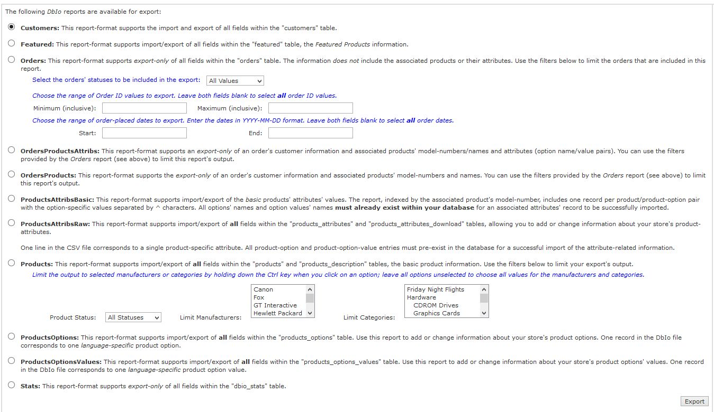
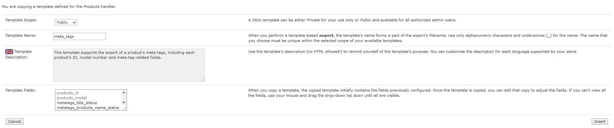

Version 1.6.3 Copyright © 2015-2020, Vinos de Frutas Tropicales.
Current Support Thread on the Zen Cart forums: https://www.zen-cart.com/showthread.php?220569-Database-I-O-Manager-(DbIo)-Support-Thread
DbIo emulates one of the more popular Zen Cart plugins — Easy Populate — providing "handlers" to easily input (import) data to your cart's database and output (export) that data via a comma-separated-value (CSV) or tab-delimited file. In the DbIo, a "handler" is responsible for all I/O actions required to support a specific operation … like importing a set of product specifications or exporting a list of customer orders.
Why emulate rather than contribute to the EP-4 plugin's development? Given the principles which guided DbIo's development:
… the DbIo processing is a revolutionary spin-off of Easy Populate; any differences between the EP-4 and DbIo handling will be identified in this readme.
This section identifies the processes you'll use to initially install DbIo or uninstall DbIo entirely.
There are neither core-file overwrites nor template-overrides used by this plugin; you should always backup your cart's database and files prior to making any changes. Unzip the plugin's package file and then:
First, delete the files that were copied to your Zen Cart's file-system, then copy the contents of the plugin's /docs/dbio/uninstall/uninstall_dbio.sql to your clipboard and paste into your admin's Tools->Install SQL Patches to complete the uninstall process.
This section identifies the steps you'll take to customize your Database I/O Manager installation.
Note: The DbIo requires the PHP php-mbstring extension to be loaded for its proper operation; if it's not installed, you'll receive an error message when you attempt to use Tools->Database I/O Manager. If you receive that message, you'll need to contact your webhost and request that the extension be loaded on your store's server.
Here are some things to consider as you're setting up and configuring your DbIo installation:
CHARSET is compatible with your store's DB_CHARSET values. It's your job to properly identify the character-set used by the spreadsheet tool you are also using (e.g. Apache OpenOffice or Microsoft Excel).You'll use the Configuration->DbIo Manager Settings->CSV: Encoding setting to instruct DbIo how to interpret the data coming from or going to a .csv file. Set that value to utf8 if you are using Apache OpenOffice (or any other known utf8-generating program) or to latin1 if you are using Microsoft Excel.
.csv files to be processed by the Featured handler reside in the /YOUR_ADMIN/dbio/ folder and are named dbio.Featured.anything.csvlanguage_id (e.g. v_products_name_1) to identify language-specific fields, DbIo appends the (more portable) language_code (e.g. v_products_name_en) when identifying language-specific values.products_status to a value of 9 to indicate a product to be removed, DbIo introduces a new column (v_dbio_command) that a handler can conditionally enable to support record-removal and/or other commands. Starting with v1.1.0, the Products handling supports this field; set that column's value to REMOVE for a particular product and, if the product exists, it will be removed.Once you've installed DbIo, you can customize its base settings via Configuration->DbIo Manager Settings:
| Field Name | Field Description |
|---|---|
| Version/Release Date | Displays the plugin's version number and release date. |
| CSV: Delimiter | Enter the single character that is used to separate columns within any DbIo CSV file. To use the tab-character as the delimiter value, enter the word TAB. Defaults to the comma (,) character. |
| CSV: Enclosure | Enter the single character used to enclose fields within any DbIo CSV file. Defaults to the double-quote (") character. |
| CSV: Escape | Enter the single character used as the escape-character within any DbIo CSV file. Defaults to the backslash (\) character. |
| CSV: Encoding | Choose the type of encoding to be associated with all DbIo I/O files. If you use Microsoft® Excel, choose latin1; if you use Apache OpenOffice, choose utf8. |
| CSV: Import Date Format | Choose the format used by any DbIo CSV file when importing date and datetime fields, one of:
|
| Maximum Execution Time (seconds) | Enter the maximum execution time for a DbIo operation, in seconds. Default: 60 |
| Split File: Record Count | Sometimes, splitting a .csv file into multiple, smaller files can help if your server is timing out on an import operation or if an exported .csv is too large to download in a single chunk. Enter the number of records (Default: 2000) at which to split these files using the Database I/O Manager. |
| Default File Sort Order | Choose the default sort-order that the Database I/O Manager uses when displaying the I/O files it has discovered, one of:
|
| Products Import: Allow Duplicate Models? | Choose whether (Yes) or not (No) any Products import should be allowed to change an existing product's "model number". Default: No. (Introduced in v1.1.0) |
| Products: Auto-Create Categories on Import? | How should the DbIo handle missing categories on a Products import? Choose Yes to have any missing categories automatially generated; choose No (the default) to disallow any product imports when the categories don't previously exist. (Introduced in v1.3.0) |
| Enable Debug? | Identify whether (true) or not (false, the default) the DbIo debug is to be enabled. When enabled, all I/O status is written to a dbio-*.log file in your store's /YOUR_ADMIN/dbio/logs folder. |
| Debug Date Format | Enter the formatting string used to timestamp all DbIo log entries; see the description of the PHP date function for more information. (Default: Y-m-d H:i:s). |
DbIo uses "Handler" scripts to customize an I/O action; the following table shows the Handlers currently provided.
| Handler Name | Actions | Export Filters | Customizable? | Description | EP-4 Name |
|---|---|---|---|---|---|
| Customers | Export | None | No | This handler provides the export-only of all fields in the database's customers table. |
— |
| Featured | Import, Export | None | No | This handler provides the import and export of all fields in the database's featured table. |
Featured Products |
| Manufacturers | Import, Export | None | No | This handler provides the import and export of all fields in the database's manufacturers and manufacturers_info tables, added in v1.2.0. |
— |
| Orders | Export | Orders Status, ID Range, Date Range | Yes | This handler supports export-only of all fields within the orders table. The information does not include the associated products or their attributes. |
— |
| OrdersProducts | Export | Orders Status, ID Range, Date Range | No | This handler supports the export-only of an order's customer information and associated products' model-numbers and names. | — |
| OrdersProductsAttributes | Export | Orders Status, ID Range, Date Range | No | This handler supports an export-only of an order's customer information and associated products' model-numbers, names and attributes (option name/value pairs). | Filterable Order Exports: Orders Full |
| Products | Import, Export | Product Status, Manufacturer, Category | Yes | This handler supports import/export of all fields within the products, products_description and meta_tags_products_description tables, the basic product information.
|
Complete Products |
| ProductsOptions | Import, Export | None | No | This handler supports import/export of all fields within the products_options table, the products' options' information. When importing new records for a multi-language store, the import should be run once per language value. Otherwise, the products_options_id will get "out-of-sync" between the multiple languages. |
— |
| ProductsOptionsValues | Import, Export | None | No | This handler supports import/export of all fields within the products_options_values table, the products' options' values' information. When importing new records for a multi-language store, the import should be run once per language value. Otherwise, the products_options_id will get "out-of-sync" between the multiple languages. |
— |
| ProductsAttribsBasic | Import, Export | None | No | This handler supports import/export of the basic fields associated with the products_attributes table, using a products_model value to associate a product to the attribute-values (products_options_type, products_options_name, and products_options_values name). |
Basic Products Attributes |
| ProductsAttribsRaw | Import, Export | None | No | This handler supports import/export of all fields associated with the products_attributes table, using the products_id, options_id, and options_values_id values to identify a record in the table and, thus, whether the record is an insert or an update. |
Detailed Products Attributes |
| ProductsDiscountQuantity | Import, Export | None | No | This handler supports import/export of fields associated with the products_discount_quantity table, using the products_id value to identify the product for which the discount-quantities are to be updated. Refer to the handler's on-screen instructions for additional information. |
— |
| Specials | Import, Export | None | No | This handler supports the import/export of fields associated with the specials table, using the products_id value to identify the product for which a special-price is to be updated. Refer to the handler's on-screen instructions for additional information.A product's special price can be removed using a v_dbio_command column with the value set to REMOVE. |
— |
| Stats | Export | None | No | This handler supports export of all fields present in the dbio_stats table, where DbIo records its statistics. Starting with v1.6.0, once the table is exported, the table is emptied. |
— |
Following are the naming conventions used by the Database I/O Manager:
/YOUR_ADMIN/includes/classes/dbio/DbIoMyHandlerHandler.php/YOUR_ADMIN/includes/languages/english/dbio/DbIoMyHandlerHandler.phpThis section describes how to use the Tools->Database I/O Manager tool.
| Selection Area | |
| Export Area | File-Upload Area |
| Import/File-Action Area | Configuration Area |
The Database I/O Manager organizes its display into five (5) sections:
.csv file from your computer for the DbIo to handle. That file, once successfully uploaded, is stored in the /YOUR_ADMIN/dbio folder..csv and .log files available for the selected handler. Within this section, you can choose a file to import, split, download or delete; see the Other File Actions tab for additional details.This section displays the export options available for the currently-selected handler. Some of the handlers, like Orders shown below, make use of additional filters that enable you to limit the export's output and/or enable export-template customizations.
Filters, if supported by the selected handler, aren't displayed initially, since the generation of those filters can have a negative impact on the tools's performance for stores with large databases. When you tick the "show/hide filters" box, that enables/disables the automatic rendering of the filters for all handlers (the selection is stored in the currently-logged-in admin's session variables).
Templates, if supported by the selected handler, enable you to export a subset of the handler's fields. Refer to the Manage DbIo Templates tab for additional information. When a handler supports templates, like Orders, you can use a previously-customized template or click the "Manage Templates" button to create a new one.
Make your choices from the options provided by the current handler and click the Export button; the exported .csv file will be created in the /YOUR_ADMIN/dbio folder. Starting with v1.6.0, if you tick the checkbox next to the Export button, the generated .csv file will be immediately downloaded upon export; that setting is "remembered" in the currently-logged-in admin's session.
Note: Additional processing time will be required for the DbIo Manager export if you have the plugin's debug-mode enabled.
This section simply displays the DbIo's current configuration settings (and some of the applicable system settings) so you're aware of how the DbIo Manager is going to process your request. Clicking on the link takes you to the Configuration->Database I/O Manager Settings page.
If the currently-selected handler supports imports, you can use this section to upload any .csv files that you plan on importing into your site's database. Use the "Browse" button to select your file, making sure that the file is not larger than the Maximum File Upload Size shown in the DbIo configuration area, and then click the "Upload" button. The file will be saved in the /YOUR_ADMIN/dbio folder.
Note: The imported file's name must be associated with the currently-selected handler, e.g. if the Products handler is selected, the uploaded file's name must be of the form dbio.Products.*.csv.
This section of the DbIo Manager enables you to manage the .csv files present in your site's /YOUR_ADMIN/dbio folder and the DbIo-generated .log files present in your site's /YOUR_ADMIN/dbio/logs folder.
You can delete selected files by ticking the associated checkbox(es) in the Delete? column and then clicking the "Delete" button — you'll receive a confirmation pop-up just to make sure.
You can also use the dropdown selection at the top of the display to perform additional actions on the file selected via radio-button in the Choose File column:
You can sort the files discovered by the DbIo Manager by the file-name, file-size or the last-modified date using the arrow-links in the file-list header.
DbIo pre-defines the folder /YOUR_ADMIN/dbio as the location that your comma-separated-value (CSV) files reside. Whenever DbIo outputs (exports) a datafile, the file is created in this folder; any .csv files associated with the currently-active handler found in this folder are displayed within the DbIo's "Import/File-Action Area".
When you enable DbIo's debug, using Configuration->DbIo Manager Settings->Enable Debug?, the log files are created within the folder /YOUR_ADMIN/dbio/logs.
This section describes how to use the Configure DbIo Templates tool, available via click of the "Manage Templates" button from Tools->Database I/O Manager when the currently-selected handler supports export templating.
The DbIo's templating support allows you to choose a subset of the fields provided by the currently-selected handler for a customized export and subsequent import. There are a couple of pre-defined templates for the Products handler that will give you an idea of what you can do with this feature.
On initial entry to the DbIo template-manager, the templates for the currently-selected handler are displayed. The following information is displayed for each:
When you create or edit a DbIo template, a page similar to the following is displayed. Within this page, you identify the scope, name and description of the template and then use the Choose Template Fields block to select the fields to be included in a template-based export as well as the order that those fields will appear in the output .CSV file. Some features of that section are:
When you copy an existing template, you can change the template's scope and/or name but the name you choose must be unique within its scope. This feature allows you to make a private copy of a public template and further customize it for your use. You can also make a public copy of a private template that all authorized admins can use.
You can view the details of these changes on the plugin's GitHub repository.
dbio_stats table on an export.specials table.GROUP BY clause.v_dbio_command value of REMOVE.GROUP BY clause.DB_CHARSET of utf8mb4 not recognized as valid utf8 variant.double.Products export columns are "off" for its specially-handled fields, due to v_dbio_command column inserts.ProductsDiscountQuantity handler.Products export results in error when imported.Customers export.Products customized language fields' ordering.Products export returns all fields of the products_description table.NULL.php-mbstring extension is not loaded.v_dbio_command column, allowing handlers (e.g. Products) to accept commands (like REMOVE).DbIoHandler class.DbIoProductsHandler has been updated to enable an import based on either products_id or products_model.